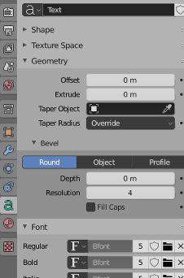
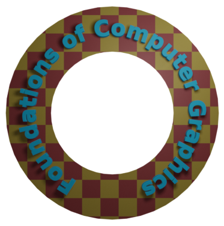

Section B.2
Blender Modeling
Blender has a wide variety of basic shapes and tools for making more complex objects. This section will discuss just a few of the possibilities for modeling 3D shapes.
B.2.1 Text
Blender can work with text, which it can render either as a flat 2D shape or as a 3D shape with added thickness.
To add a text object to your scene, use the "Text" command in the "Add" menu. When you put a text object into Edit Mode, by pressing the TAB key while it is selected, you can use the keyboard, including the backspace and arrow keys, to edit the text that it contains; you will certainly want to do this, since the initial text is just the word "Text".
When a text object is selected, the button for selecting the Object Data properties in the Properties Editor shows an "a". Clicking the "a" reveals various useful controls, some of which are shown in this picture:

For example, there are buttons to control whether multi-line text is Right, Left, or Center justified, and there are numeric inputs to control character, word, and line spacing. (Not shown here — look further down, in the "Paragraph" section of the Object Data properties.) You can also select the font to be used for the text. Blender has only one pretty basic built-in font, but you can select a font file from the file system to be used instead. Blender can work with Postscript Type 1, True Type, and Open Type fonts. To select a font file, click a small "folder" icon in the "Font" section, as shown above. You can set separate fonts for "Regular," "Bold," "Italic," and "BoldItalic" styles. There are menu commands available while editing a Text object for selecting the style, but by default only the "Regular" style font is used. (By the way, you can download lots of free fonts from Google Fonts at www.google.com/fonts.)
An interesting feature is that you can lay your text out along the shape of a curve. You need a curve object, which you can create as described in the next subsection. You need to know the name of the curve object; you might want to change the name to something meaningful. Select the text object. Go to the Object Data controls for the text, shown above. Find the box labeled "Text on Curve" (in the "Transform" section under "Font"), click the icon on the left end of the box, and select the curve from the popup menu of available curves. The baseline of the text will curve to match the shape of the curve. If you change the shape of the curve or scale it, the text will follow the new shape. You will likely have to scale the text and/or the curve to get it to fit nicely. Note that the text does not jump onto the curve; it just uses the curve object's shape, wherever the curve is located. The curve itself will not be visible in a rendered image. If you don't want to see the curve in the 3D View you can turn off the visibility of the curve in the scene graph display in the top right area of the Blender window. For the following sample image, I used a Bezier Circle for the Text on Curve feature, and I made the background using a circle with another circle deleted from its center. I used a Checker texture for the material on the background.

Once you have your text, you can extrude and bevel it, exactly as described in the next subsection for curves, to get a nice 3D appearance. The text in the above image has been extruded and beveled, and you can see the shadow of the 3D text object on the background.
B.2.2 Curves
Blender has two types of curves: Bezier curves and NURBS curves. (There are also "paths", which are just a kind of NURBS curve.) To add a curve to your scene use the "Add" / "Curve" sub-menu. A Bezier curve has "control points" with "handles" that can be adjusted to change the shape of the curve. NURBS curves are similar, but the curve is determined entirely by control points and isn't constrained to pass through any particular points. NURBS curves are known for making nice smooth shapes. (There are also NURBS surfaces.)
By default, a curve is "3D," that is it doesn't have to lie in a plane. Usually, you want "2D" curves that are constrained to lie on a plane. To make a curve 2D, go to the "Object Data" controls for the curve in the Properties Editor. When a curve is selected, the button for "Object Data" looks like a curve connecting two points. Click the "2D" button. The interior of the curve might not be filled in at this point. To get a filled-in curve, set the "Fill Mode" in the Object Data properties to "Both."
When you put a curve into Edit Mode, you will see its control points. For a NURBS curve, they lie alongside the curve. For a Bezier curve, the control points are at the ends of "handles" that are attached to points on the curve. You can select control points and drag them (using the G key) or otherwise transform them. For a Bezier curve, you can also select the points on the curve and drag them. By default, the two ends of a handle line up, making a straight line; if you move one end, the other end also moves. (There are actually four types of handles: Auto, Vector, Aligned, and Free. Select one or more vertices in Edit Mode, and hit V to change the type of handle at the selected vertices. In particular, "Free" allows you to make sharp corners on a curve.)
More important, you can extend a non-closed curve by adding new points. You should start with a basic Bezier or NURBS curve, rather than a circle. If you want the curve to be 2D, it's best to set it to 2D before adding points (but if you change it to 2D later, it will be forced onto a plane). Put the curve into Edit Mode; the curve must be in Edit Mode to add new points. For a Bezier curve, select one endpoint of the curve, by left-clicking near it. For a NURBS curve, select one of the two end control points. To add a new point, control click with the right mouse button at the location where you want the new point to be located. The new point that you add will be connected to the selected endpoint, and the selection will move to the point that you just added. This makes it easy to add several points in sequence by control-right-clicking several times.
If the curve is not already closed and you want to close it (that is, connect the end back to the beginning), just hit "ALT-C" while the curve is in Edit Mode. Hitting "ALT-C" key again will re-open the curve.
A curve can actually consist of several disconnected segments. If you add another curve while a curve is in Edit Mode, you add a new segment to the existing curve rather than a separate curve. For example, if you add a Bezier circle to the scene, put it into Edit Mode, and then add another Bezier circle inside the first, you will get a ring—a disk with a hole removed. That's how I made the background for the above image. To transform just one of the segments of a curve, put the curve into edit mode, select all the vertices of the segment that you want to transform, and then apply the transformation.
A closed 2D curve bounds a region, which will be shown as a flat surface when you render the scene. When a curve self-intersects or has several disconnected segments, it's not completely clear what it means to be inside the curve. The rule is based on "winding number" at a point, which means the number of times that the curve encircles the point. If the curve circles the point an odd number of times, then the point is inside the curve; if the curve encircles it an even number of times, then the point is outside.
You can extend the 2D region inside a closed 2D curve into the third dimension by extruding the curve. Look in the curve's "Object Data" controls for a numerical input labeled "Extrude" (under "Geometry"). Increasing the value in this box extends the curve into a 3D object, perpendicularly to the plane in which it lies. In the "Bevel" section under "Geometry," you will find a "Depth" box and a "Resolution" box. Increase the value in the "Depth" box to cut an edge off the 3D shape of the extruded curve. The value in the "Resolution" box determines how rounded the edge is. For the object on the right in the following picture, I put a Bezier circle inside another closed Bezier curve (while in Edit Mode!) and set Extrude, Depth, and Resolution to be positive values:
It's possible to transform a Text object into a curve. Just select the text object, right-click to get a pop-up menu, and select "Curve" from the "Convert To" submenu of the popup menu. (Note, however, that you won't be able convert the curve back to a text object.) Once you've converted the text into a curve, you can edit the character outlines as curves. Furthermore, you can add other curve segments to the text curve. For the left object in the above picture, I created the text, converted it to a curve, put it into Edit Mode, added a Bezier circle, and manipulated the vertices of the circle so that the circle surrounded the text. The inside of the text was effectively subtracted from the interior of the circle.
B.2.3 Proportional Editing
The rest of this section deals mostly with mesh modeling, and even then it only covers a small portion of all the options that are available.
By default, when you transform selected vertices (or edges or faces) of a mesh object in Edit Mode, only the selected items are affected. This can lead to ugly, spikey objects! But if you turn on Proportional Editing, then a vertex exerts a kind of force on neighboring vertices, so that for example if you drag a vertex, nearby vertices are pulled along with it. There is a small button in the header panel below the 3D view that turns on proportional editing in Edit Mode:

In the picture, the small blue button has been clicked to enable proportional editing. The popup menu to the right of the blue button lets you select what kind of influence the transformed vertices will have on other vertices.
When proportional editing is turned on and you are transforming some vertices, a circle appears in the 3D window to show the "radius of influence", that is, the distance over which the force exerted by a vertex extends. You can change the size of the radius of influence using the scroll wheel on the mouse or the "PageUp" and "PageDown" keys. In the following image, an icosphere is in Edit Mode and a group of vertices is being dragged. The white circle shows the radius of influence, and you can see that vertices within that radius have shifted somewhat in the same direction as the dragged vertices. The shape that results from this edit will be much nicer than if only the selected vertices were moved.

(Try selecting the vertices along equator of a UV Sphere and scaling the selection up, with proportional editing enabled. You can make something like a flying saucer shape!)
B.2.4 Extruding Meshes
Extrusion is a powerful method for adding geometry to a mesh. Extrusion duplicates one or more geometry elements (vertices, edges, or faces), with the duplicate attached to the original mesh with more new edges or faces. One way to do this is with "quick extrude" (although it doesn't offer the most control). To use it, put the mesh object into Edit Mode and select the geometry elements that you want to duplicate. Mostly commonly, that will mean one of the faces of a mesh, although you can also do multiple faces or single edges. Selecting a face means selecting all the vertices of that face. Then all you have to do is control-right-click at some point, and the selected face will be duplicated at that point. (Note that this is the same way that you would extend a curve.) The original face is now de-selected, and the new duplicate face is selected instead, making it easy to move, scale, or rotate the new face and to add more faces at other locations.
For more control, select the geometry that you want to duplicate and press the "E" key. When you extrude using the "E" key, the duplicated geometry is in the same location as the original and will not be visible, but it is selected and in grab mode so that you can easily move it away from that location simply by moving the mouse or pressing arrow keys. Remember that you can constrain the possible translations by holding down the control keys while dragging. And remember to left-click or press Return to exit from grab mode!
As an example, I started with a mesh cube and extruded various faces, scaling each extruded face along the way. Here is what it looked like in the Blender 3D window in Edit Mode:

B.2.5 Mesh Modifiers
Modifiers are a powerful feature that can affect the rendered view of a mesh object, without actually modifying the underlying geometry. To apply a modifier to an object, first select the object. Then go to the "Modifier Properties" controls in the Properties Editor. The button for selecting the Modifiers controls looks like a monkey wrench. Click the "Add Modifier" button to choose from a large selection of modifiers to be added to the object. I will mention only a few of them. In fact, I only understand a few of them myself. Here is a picture of the modifier controls after adding two modifiers:
When you apply several modifiers to a mesh, they will be applied one after the other in the order listed. Each modifier will take the result of the previous modifier as its starting point.
When you click Add Modifier, you get a popup menu containing the available modifiers. Towards the bottom of the popup menu, under the heading "Generate", you will see the "Subdivision Surface" modifier. This modifier is useful for modeling shapes, particularly when used with extrusion. It makes a smoother shape that uses the original shape as an outline, sort of like the control points of a NURBS curve. Try adding a "Subdivision Surface" modifier to a cube that you have extruded a few times. When you do that, a small panel will appear under the "Add Modifier" button with controls for the modifier, as shown above. The "Levels Viewport" and "Render" inputs are important controls for sub-surfaces. Increasing the level increases the number of polygons on the sub-surface, and hence its smoothness. The "Render" control selects the number of levels that will be used when an image of object is rendered. The "Levels Viewport" control selects how many levels you see in the 3D window, which you might want to make smaller than the render level to speed up drawing of the window. (Remember that if you want a really smooth appearance for a mesh, you should set the mesh to use "Smooth Shading" instead of "Flat Shading.")
The "X" icon at the right end of the header for a modifier's control panel can be used to delete the modifier from the object. In the popup menu just to the left of the "X", you will find an "Apply" command. If you select that command, the original mesh object will be discarded and replaced with the modified version of the surface. This makes the modification permanent. The modifier will disappear from the modifier control panel. You might do this if you want to start editing the sub-surface itself—but you won't be able to get the original back (except with Undo).
Another modifier, the "Array" modifier, can make duplicates of an object and arrange them in a line. Just add the modifier to an object, adjust the distance between objects in the X, Y, and Z directions, and use the "Count" control to specify how many objects you want. (There are more advanced ways of arranging the duplicates, but I won't cover them here.)
In the picture shown below, I started with a single "Monkey" mesh object, with a material that uses the "Noise" texture for its base color. I applied three Array modifiers to it. The first modifier turned the monkey into a line of four monkeys in the X direction, with an X-offset of 1.1 and Y- and Z-offsets of 0. Setting the X-offset to 1.1 rather than 1.0 adds a little space between copies. The second modifier duplicated the line in the Y direction to give a 4-by-4 grid. The third duplicated the grid in the Z direction to give a 3D formation of monkeys.

As an example of something different that you can do with a texture, we look at displacement mapping, where the vertices of a mesh are moved, or displaced, by an amount that depends on a texture. You can do displacement mapping with a "Displace" modifier.
Displacement mapping can work well for an icosphere, where it can add a rough, planet-like surface. For terrain, you can apply a Displace modifier to a mesh "Grid" object. A Grid is just a subdivided rectangle. To get nice terrain, you need a lot of vertices, so change the "X Res" and "Y Res" of the grid to 50 or higher when you create it. (Alternatively, you could use a Mesh Plane and subdivide it several times. To subdivide it, go into Edit mode, make sure all vertices are selected, and use "Subdivide" from the popup menu.) Similarly, if you want to apply a Displace modifier to an Ico Sphere, you should increase the number of Subdivisions when you add it.
To use a texture as a displacement map on the selected Mesh object, go to the "Modifier" controls and add a "Displace" modifier, which you will find towards the top of the "Deform" section of the popup menu. You will see the mesh jump, because the default displacement is one. To use a texture as the displacement map, you will need to add a texture to the displacement controls and then edit the texture. Click the "New" button at the top of the displacement modifier controls to add a new texture (or select an existing texture using the popup menu to the left of "New"). Then go the "Texture Properties" tab of the Properties Editor. (The button for the Texture Properties is the one at the very bottom.) Here you can select the "Type" of texture. For example, a "Clouds" procedural texture often works well. You can also use an "Image" texture, and open an image to be used as a "height map" for the displacement. (Height maps are often used to make natural-looking terrain.) You can sometimes get an interesting effect by using an image both for the base color of the material and as the displacement map for a mesh.
You should see the effect on the Mesh immediately. You will almost certainly want to go back to the Modifier properties and decrease the "Strength" of the modifier to make the displacement effect less extreme. Also you will probably want to use Smooth Shading for the mesh. (To make the mesh even smoother, you might add a Subdivision Surface modifier to the mesh, before the Displace modifier. Note that you can drag modifiers around in the Modifier Properties panel.)
Here is an example of a Displace modifier applied to a Grid. I used a Clouds texture on the grid to produce the brown terrain. To make the blue "water", I added a Plane in the same location as the grid and gave it a blue material.
(By the way, the textures in the Texture Properties are called "legacy textures." They were used for materials in older versions of Blender, but I haven't found a way to do that in the current version. In fact, I have not yet found anything that they can be used for other than displacement mapping.)
The examples for this section were rendered as .png images with a transparent background. To get Blender to use a transparent background in a rendered image, you need to go to the "Render Propreties" in the Properties Editor, and enable the "Transparency" checkbox in the "Film" section. When you save the image, be sure to use RGBA format and save it as a PNG image, not JPEG.